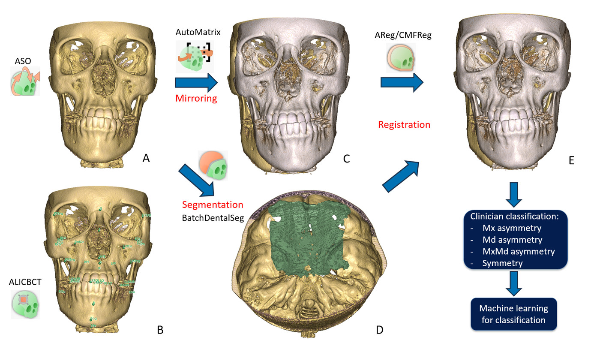

VFACE : classer l'asymétrie faciale
VFACE mesure et classe l'asymétrie squelettique faciale à partir d'un seul CBCT par patient. Pas besoin d'un second scan de comparaison : le module fabrique lui-même un « reflet » du patient et compare le patient à son propre miroir.


Quand s'en servir
Dès que vous voulez objectiver une asymétrie faciale sur un CBCT, la quantifier plutôt que l'estimer à l'œil, et éventuellement savoir si elle touche plutôt la mandibule, le maxillaire, ou les deux. VFACE part d'un volume brut : pas de segmentation ni de landmarks à préparer avant de le lancer, il s'occupe de tout.
VFACE n'est pas un outil isolé : c'est un chef d'orchestre qui enchaîne, l'un après l'autre, six autres modules de l'extension (rééchantillonnage, orientation, segmentation des os, recalage, segmentation des surfaces dentaires, classification). Sur un lot de patients, comptez que le traitement complet est long, de l'ordre de l'heure par patient selon votre machine, et qu'il occupe les autres outils pendant qu'il tourne. Prévoyez de le lancer quand vous n'avez pas besoin des autres modules en même temps, typiquement la nuit sur une série.
Ce qu'il vous faut, ce que vous obtenez
À fournir
- Un dossier de CBCT T1 bruts, un par patient (
.nii,.nii.gz,.nrrd,.nrrd.gz,.gipl,.gipl.gz) - Aucune segmentation ni landmark préalable : le module part du volume seul
- Les modèles entraînés (ALI, AMASSS, DentalSegmentator, classifieurs VFACE), à télécharger une fois
- Un dossier de sortie, sur un disque avec de la place
Ce qui sort
- Un tableau de mesures par patient (distances et angles squelettiques)
- Un fichier de classification final indiquant si le patient est symétrique ou asymétrique, et si l'asymétrie touche la mandibule et/ou le maxillaire
- En option, des surfaces osseuses et des cartes de distance colorées (heatmaps) pour visualiser où se situe l'écart
Marche à suivre
- Téléchargez les modèles. Un bouton dédié récupère tous les poids nécessaires aux modules enchaînés. À ne faire qu'une fois.
- Désignez le dossier d'entrée contenant vos CBCT T1, et un dossier de sortie.
- Choisissez le mode d'analyse. Pour une asymétrie (le cas courant), VFACE fabrique le miroir du patient et produit la classification. Un mode « études longitudinales » existe pour comparer deux vrais temps du même patient, mais il ne produit alors pas de classification.
- Choisissez ce que vous voulez en sortie. Les mesures et la classification (mode quantitatif), les surfaces et cartes de distance (mode visualisation), ou les deux.
- Lancez. Le pipeline traite les patients les uns après les autres. Des pauses de revue s'intercalent à des étapes clés : elles chargent les résultats intermédiaires dans la scène et vous laissent les vérifier, voire corriger des landmarks ou ajuster un recalage, avant de continuer.
Comment lire le résultat
Avant le tableau, l'image. C'est de cette mesure que le classifieur est nourri : le patient face à son propre reflet, et l'écart qui reste après superposition sur une structure.
- 0.
t1_oriented_cb:semi_aso_cbcttourne le patient de 2,67° sur le plan x = 0 - 1.
t1_landmarks: les 26 points qu'ALI a prédits ici - 2.
t1_masks, AMASSS : les surfaces osseuses sur lesquelles les cartes sont mesurées - 3.
mirror_scans:diag(-1, 1, 1), une réflexion par rapport à x = 0 - 4.
registration_cb/_max/_mand: sur une seule structure, les landmarks convergent - 5.
bone_surfaces: la carteModelDistancepropre à VFACE
ModelDistance.
Le miroir est Matrix_mirror.tfm =
diag(-1, 1, 1), translation nulle : une réflexion pure par
rapport à x = 0, un plan du monde. Rien en elle
ne sait quoi que ce soit du patient, et c'est précisément la raison d'être de toute
la chaîne en amont : amener le plan mi-sagittal du patient sur ce plan-là.
La réflexion est animée en passant par son état dégénéré,
diag(0, 1, 1), parce qu'une réflexion ne s'interpole pas par des
rotations : le déterminant devrait passer de −1 à +1 sans jamais valoir
zéro. Le plan se dessine à mi-bascule. Et voici le point important.
createlistprocess.py appelle ModelToModel Distance trois fois, une fois
par recalage, et les trois cartes ne disent pas la même chose. Superposé sur la
base du crâne, tout le visage est déplacé latéralement : |d| médian
7,0 mm, 46 % des sommets au-delà de 8 mm, plage de −25 à +32.
Superposé sur le maxillaire, le crâne supérieur rejoint son propre
miroir à 1,0 mm près. Sur la mandibule, à 0,45 mm près. Se
superposer sur une structure rend cette structure symétrique par
construction : ce n'est pas un défaut de la mesure, c'est la mesure.
Le sens de ces matrices a été mesuré, pas supposé. elastix écrit
l'application fixe→mobile : c'est donc son inverse qui amène le miroir
sur T1. L'écart de surface moyen tombe de 2,88 mm à 1,73 mm avec
l'inverse, et monte à 4,57 avec la matrice telle qu'écrite : pire que de
laisser le miroir tranquille. Le générateur essaie désormais les deux sens contre T1
à chaque run, garde le meilleur, et refuse d'écrire le fichier si aucun des deux ne
fait mieux que ne rien faire. Trois surfaces différentes, trois échelles
différentes. Ce sont bien les fichiers qu'écrit VFACE : la carte de la base
du crâne couvre tout le crâne, celle du maxillaire le seul crâne supérieur, celle de
la mandibule la seule mandibule, de sorte que, quand une carte ne couvre
qu'une structure, le reste du crâne reste en gris neutre derrière elle. Leurs plages
mesurées vont de ±2,6 mm à ±32 : chaque carte porte donc sa
propre échelle, montrée dans la barre et fixée à son 95e centile plutôt qu'à son
maximum ; comparez-les sur les chiffres de la ligne d'état,
pas sur la teinte. Le bleu est négatif, le rouge positif, le gris pâle vaut zéro
: la distance est signée, telle que VFACE l'écrit. La commande qui compte est la rangée de
boutons, et les étapes ci-dessous sont cliquables si vous voulez vous
arrêter sur l'une d'elles. Il n'y a pas de second scan ici : le
« T2 » est le reflet du patient lui-même. Le plan, et
comment il est calculé : il ne l'est pas. x = 0 est un plan du
monde, fixé par le fait que Matrix_mirror.tfm vaut
diag(-1, 1, 1), translation nulle et paramètres fixes nuls. Rien
n'ajuste un plan à ce patient. Ce qui est calculé, c'est l'orientation qui
amène le patient dessus : ALI place les landmarks, puis semi_aso_cbct
fait une initialisation à 3 landmarks suivie d'un ICP rigide sur un étalon, et ici
cela donne une rotation de 2,67°. L'étape 0 la joue pour de vrai,
une version antérieure de cette légende affirmait que la pose d'avant orientation
« n'existe nulle part », ce qui était simplement faux : elle
est dans Centered T1 Scans, et la transformation écrite par VFACE fait
le lien entre les deux. Son sens a été mesuré, pas supposé. À
l'étape 4 les landmarks restent à l'écran, pour que vous puissiez voir
si le recalage les rapproche vraiment. Comme le miroir échange gauche et droite,
chaque point miroir est apparié à son homologue contralatéral, RGo
contre LGo, ce que la section sur la mesure explique déjà ; apparier chaque
label avec lui-même donne 51 mm d'absurdité, l'appariement contralatéral donne
4,70 mm avant recalage. Distance médiane après recalage : 1,57 mm sur la
base du crâne, 2,16 sur la mandibule, et 12,84 sur le maxillaire contre
12,79 avant, celui-là ne converge pas du tout, ce qui est la même
faiblesse que montrait déjà son ajustement de surface relâché. Les deux extrémités
sont mesurées ; seul le chemin entre elles est interpolé. Un défaut trouvé
dans la sortie publiée. Ces positions recalées sont ici recalculées depuis
la matrice vérifiée plutôt que lues dans
Mirrored & Registered Landmarks, car ce dossier s'accorde avec la
matrice à 0,04 mm pour le maxillaire et 0,13 pour la mandibule, mais s'en écarte de 20,02 mm pour la base
du crâne : ses points sont décalés en bloc rigide d'environ 23 mm en x et
s'éloignent de la cible. L'accord sur les deux autres est aussi la preuve
la plus forte que l'inverse est le bon sens.
Le livrable final est un tableau de classification, une ligne par patient, avec trois indications :
- Symétrique / Asymétrique : le verdict global.
- Mandibule : oui / non, évalué uniquement si le patient est classé asymétrique.
- Maxillaire : oui / non, évalué dans les mêmes conditions, indépendamment de la mandibule.
Les deux dernières indications ne s'excluent pas : un patient peut être marqué asymétrique à la fois côté mandibule et côté maxillaire. Le tableau de mesures détaillées (distances et angles, à côté de la classification) reste consultable si vous voulez comprendre sur quoi repose le verdict d'un patient en particulier.
Comment citer
Si vous avez utilisé VFACE dans un travail de recherche, citez :
Buisson A. Automated Classification of Facial Asymmetry, Identification of Regional Asymmetry Patterns. Poster, 104th IADR General Session / 55th AADOCR / 50th CADR, San Diego, March 25-28, 2026.
dentistry.unc.edu. Le poster présenté à la 104ᵉ session générale de l'IADR, San Diego. Le recensement de l'UNC Adams School of Dentistry en donne le titre et l'auteur ; le poster lui-même n'est déposé nulle part de public, et les archives de l'IADR ne sont pas indexées librement.
Sanna A, Ng J, Ruellas A, Aliaga A, Gaydamour A, Tulissi E, Huang Y, Prieto JC, Al Turkestani N, Yatabe M, Bianchi J, Pieper S, Cevidanes L, Li T. Automated classification of skeletal facial asymmetry in CBCT using a reproducible 3D Slicer workflow for patient-specific decision support. In: Gimi BS (ed.), Medical Imaging 2026: Clinical and Biomedical Imaging, Proc. SPIE vol. 13929, 139292J. SPIE, 2026.
doi:10.1117/12.3087010. La seule publication qui décrit le pipeline. Payante, et à lire en sachant qu'elle décrit une méthode de classification différente de celle que le module embarque réellement.
Contexte, à ne pas citer pour l'outil
- AlHadidi & Cevidanes, Dentomaxillofac Radiol 2011: Comparison of two methods for quantitative assessment of mandibular asymmetry using cone beam computed tomography image volumes. Compare deux façons de mesurer l'asymétrie mandibulaire : miroir sur le plan médio-sagittal, ou miroir puis recalage sur la base du crâne. C'est la démarche que VFACE automatise.
- Cevidanes et al., Oral Surg Oral Med Oral Pathol 2011: Three-dimensional quantification of mandibular asymmetry through cone-beam computerized tomography. Quantifie l'asymétrie après miroir et recalage, et détaille ce que les écarts mesurés veulent dire cliniquement.
- Evangelista et al., Angle Orthodontist 2022: Prevalence of mandibular asymmetry in different skeletal sagittal patterns: A systematic review. Prévalence de l'asymétrie mandibulaire selon le schéma squelettique sagittal, pour situer un patient par rapport à une population.
- Peng et al., European Journal of Orthodontics 2026: Automated assessment of 3D facial asymmetry: a systematic review. La revue systématique du problème : les méthodes automatiques existantes et ce qu'elles valent. Le meilleur point d'entrée récent.
La bibliographie complète de l'outil, ce qui a été trouvé, et ce qui a été cherché sans rien trouver, est dans ses sources.
Comment ça marche vraiment → La fiche Atlas : l'arbre d'appels complet, les six modules enchaînés, les formules de mesure, les trois classifieurs LightGBM, et les limites relevées dans le code.